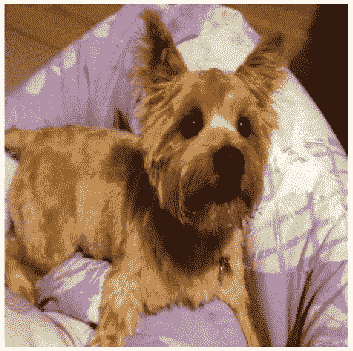
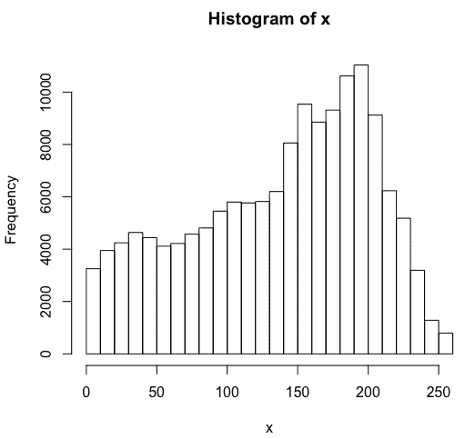
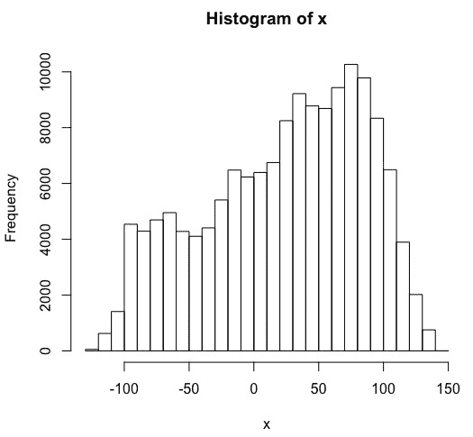
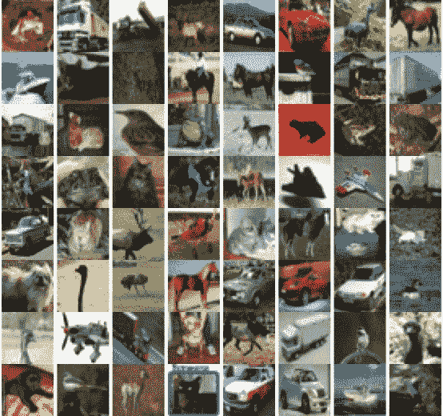
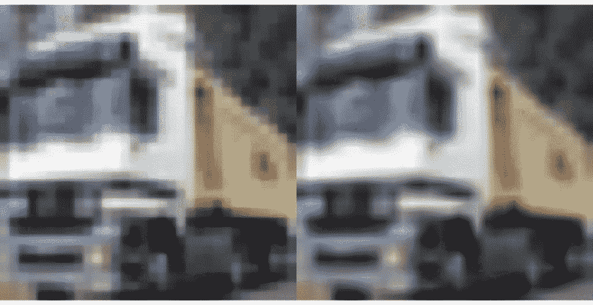
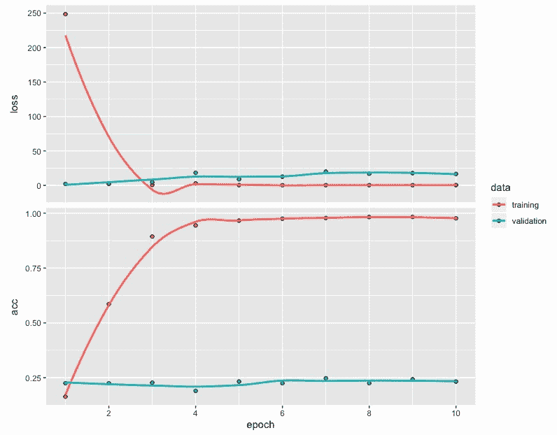
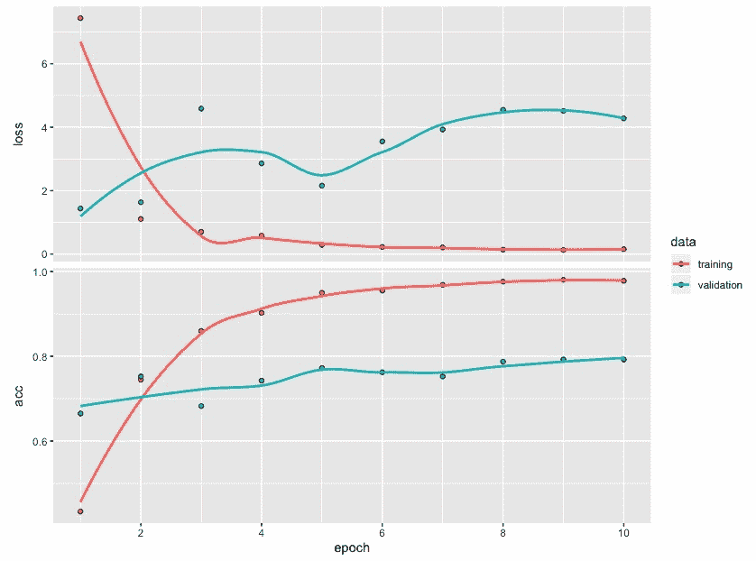
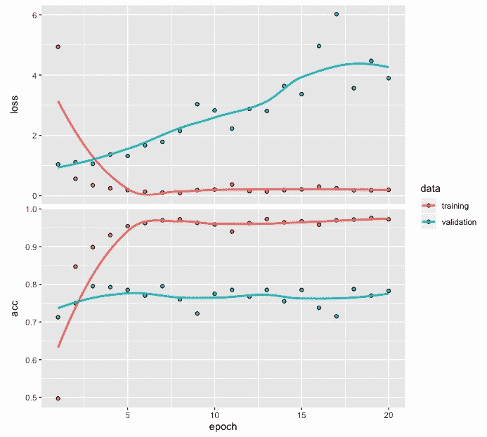
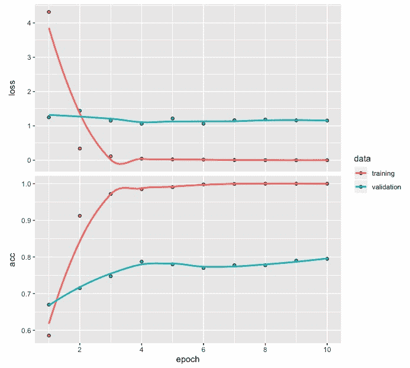

在前面的章节中，我们开发了深度学习网络，并探索了与图像数据相关的各种应用示例。与我们将在本章讨论的内容相比，一个主要的区别是，在前面的章节中，我们从头开始开发模型。
迁移学习可以被定义为一种方法，在这种方法中，我们重用经过训练的深度网络所学的知识来解决一个新的但相关的问题。例如，我们可能能够重复使用一个深度学习网络来分类数千种不同的时尚物品，以开发一个深度网络来分类三种不同类型的服装。这种方法类似于我们在现实生活中观察到的情况，老师将多年来获得的知识或学习传授给学生，教练将学习或经验传授给新球员。另一个例子是，学习骑自行车被转化为学习骑摩托车，这反过来对学习如何驾驶汽车变得有用。
在本章中，我们将在开发图像分类模型时利用预训练的深度网络。预训练模型允许我们将我们从更大的数据集中学到的有用特征转移到我们有兴趣用有点类似但新的相对较小的数据集开发的模型中。预训练模型的使用不仅允许我们克服由于数据集小而导致的问题，而且有助于减少开发模型的时间和成本。
为了说明预训练图像分类模型的使用，在本章中，我们将讨论以下主题:
在我们继续之前，让我们加载本节需要的三个包:
# Libraries used
library(keras)
library(EBImage)
library(tensorflow)
Keras和TensorFlow库将用于开发预训练图像分类模型，而EBImage库将用于处理和可视化图像数据。
在Keras中，以下预训练图像分类模型可用:
这些预训练的模型在来自ImageNet(http://www.image-net.org/)的图像上进行训练。ImageNet是一个巨大的图像数据库，包含几百万张图像。
我们将从使用被称为resnet50的预训练模型来识别图像开始。下面是我们可以用来利用这个预训练模型的代码:
# Pretrained model
pretrained <- application_resnet50(weights = "imagenet")
summary(pretrained)
这里，我们将weights指定为"imagenet"。这使得我们可以重复使用RESNET50网络的预训练权重。RESNET50是深度为50层的深度残差网络，包括卷积神经网络层。请注意，如果我们只想使用没有预训练权重的模型架构，并且希望从头开始训练，那么我们可以将weights指定为null。通过使用summary，我们可以获得RESNET50网络的架构。但是，为了节省空间，我们不提供摘要的任何输出。该网络中的参数总数为25，636，712。RESNET50网络在使用来自ImageNet的100多万幅图像方面接受了培训，并有能力将图像分为1，000个不同的类别。
我们先来读一个RStudio里的一只狗的图像。以下代码加载一个图像文件，然后获取相应的输出:
使用RESNET50网络时，允许的最大目标大小是224 x 224，允许的最小目标大小是32 x 32。
# Read image data
setwd("~/Desktop")
img <- image_load("dog.jpg", target_size = c(224,224))
x <- image_to_array(img)
str(x)
OUTPUT
num [1:224, 1:224, 1:3] 70 69 68 73 88 79 18 22 21 20 ...
# Image plot
plot(as.raster(x, max = 255))
# Summary and histogram
summary(x)
OUTPUT
Min. 1st Qu. Median Mean 3rd Qu. Max.
0.0 89.0 150.0 137.7 190.0 255.0
hist(x)
在前面的代码中，我们可以观察到以下情况:
以下是诺威奇梗犬的224 x 224彩色图片。这可以使用plot命令获得:

上图是一只诺威奇梗犬坐着向前看的照片。我们将利用这张图片，检查RESNET50模型是否能准确预测图片中狗的类型。
由数组中的值生成的直方图如下:

阵列中前面的直方图值显示强度值的范围从0到255，大多数值集中在200左右。接下来，我们将预处理图像数据。该直方图可用于比较图像数据的结果变化。
现在，我们可以对输入进行预处理，使其可以用于预训练的RESNET50模型。预处理数据的代码如下:
# Preprocessing of input data
x <- array_reshape(x, c(1, dim(x)))
x <- imagenet_preprocess_input(x)
hist(x)
在前面的代码中，我们可以观察到以下情况:
预处理后直方图形式的数据图如下:

预处理后的直方图显示了位置的移动。现在大部分数值都集中在50到100之间。但是，直方图的整体模式没有重大变化。
现在，我们可以通过提供预处理的图像数据作为输入，使用预训练的模型来进行预测。实现这一点的代码如下:
# Predictions for top 5 categories
preds <- pretrained %>% predict(x)
imagenet_decode_predictions(preds, top = 5)[[1]]
Output
class_name class_description score
1 n02094258 Norwich_terrier 0.769952953
2 n02094114 Norfolk_terrier 0.126662806
3 n02096294 Australian_terrier 0.046003290
4 n02096177 cairn 0.040896162
5 n02093991 Irish_terrier 0.005021056
在前面的代码中，我们可以观察到以下情况:
在下一节中，我们将着眼于更大的图像数据集而不是单个图像，并使用预训练网络来开发图像分类模型。
为了说明预训练模型与新数据的使用，我们将使用CIFAR10数据集。CIFAR代表加拿大高级研究所，10指的是数据中包含的10类图像。CIFAR10数据集是Keras库的一部分，获取它的代码如下:
# CIFAR10 data
data <- dataset_cifar10()
str(data)
OUTPUT
List of 2
$ train:List of 2
..$ x: int [1:50000, 1:32, 1:32, 1:3] 59 154 255 28 170 159 164 28 134 125 ...
..$ y: int [1:50000, 1] 6 9 9 4 1 1 2 7 8 3 ...
$ test :List of 2
..$ x: int [1:10000, 1:32, 1:32, 1:3] 158 235 158 155 65 179 160 83 23 217 ...
..$ y: num [1:10000, 1] 3 8 8 0 6 6 1 6 3 1 ...
在前面的代码中，我们可以观察到以下情况:
接下来，我们将使用以下代码从CIFAR10中提取训练和测试数据:
# Partitioning the data into train and test
trainx <- data$train$x
testx <- data$test$x
trainy <- to_categorical(data$train$y, num_classes = 10)
testy <- to_categorical(data$test$y, num_classes = 10)
table(data$train$y)
OUTPUT
0 1 2 3 4 5 6 7 8 9
5000 5000 5000 5000 5000 5000 5000 5000 5000 5000
table(data$test$y)
OUTPUT
0 1 2 3 4 5 6 7 8 9
1000 1000 1000 1000 1000 1000 1000 1000 1000 1000
从前面的代码中，我们可以观察到以下内容:
例如，可以使用以下代码获得训练数据中前64个图像的标签:
# Category Labels
data$train$y[1:64,]
[1] 6 9 9 4 1 1 2 7 8 3 4 7 7 2 9 9 9 3 2 6 4 3 6 6 2 6 3 5 4 0 0 9 1
[34] 3 4 0 3 7 3 3 5 2 2 7 1 1 1 2 2 0 9 5 7 9 2 2 5 2 4 3 1 1 8 2
正如我们所看到的，每张图片都用0到9之间的数字进行标记。下表描述了10种不同类别的图像:
| 标签 | 描述 |
|---|---|
| 0 | 飞机 |
| 一 | 汽车 |
| 2 | 伯德 |
| 3 | 猫 |
| 四 | 鹿 |
| 5 | 狗 |
| 6 | 青蛙 |
| 七 | 马 |
| 8 | 船 |
| 9 | 卡车 |
请注意，这10个类别之间没有重叠。例如，汽车类别指轿车和SUV，而卡车类别仅指大型卡车。
样本图像
CIFAR10的图像都是32 x 32的彩色图像。下图显示了8 x 8网格中的64幅图像:
# Plot of first 64 pictures
par(mfrow = c(8,8), mar = rep(0, 4))
for (i in 1:64) plot(as.raster(trainx[i,,,], max = 255))
par(mfrow = c(1,1))

从前面的图像中，我们可以看到这些图像具有各种背景，并且分辨率较低。此外，有时这些图像并不完全可见，这使得图像分类成为一项具有挑战性的任务。
预处理和预测
从前面的代码中，我们可以观察到得分为0.9988的顶级类别是针对移动货车的。其他四个类别的分数相对来说可以忽略不计。
# Pre-processing and prediction
x <- resize(trainx[2,,,], w = 224, h = 224)
x <- array_reshape(x, c(1, dim(x)))
x <- imagenet_preprocess_input(x)
preds <- pretrained %>% predict(x)
imagenet_decode_predictions(preds, top = 5)[[1]]
OUTPUT
class_name class_description score
1 n03796401 moving_van 9.988740e-01
2 n04467665 trailer_truck 7.548324e-04
3 n03895866 passenger_car 2.044246e-04
4 n04612504 yawl 2.441246e-05
5 n04483307 trimaran 1.862814e-05
基于CNN的图像分类
数据准备
在前面的代码中，在将尺寸从32 x 32调整到224 x 224时，我们使用了双线性插值，这是EBImage包的一部分。双线性插值将线性插值扩展到两个变量，在这种情况下是图像的高度和宽度。从下图所示的卡车前后图像中可以观察到双线性插值的效果:
# Selecting first 2000 images
trainx <- data$train$x[1:2000,,,]
testx <- data$test$x[1:2000,,,]
# One-hot encoding
trainy <- to_categorical(data$train$y[1:2000,], num_classes = 10)
testy <- to_categorical(data$test$y[1:2000,] , num_classes = 10)
# Resizing train images to 224x224
x <- array(rep(0, 2000 * 224 * 224 * 3), dim = c(2000, 224, 224, 3))
for (i in 1:2000) { x[i,,,] <- resize(trainx[i,,,], 224, 224) }
# Plot of before/after resized image
par(mfrow = c(1,2), mar = rep(0, 4))
plot(as.raster(trainx[2,,,], max = 255))
plot(as.raster(x[2,,,], max = 255))
par(mfrow = c(1,1))
trainx <- imagenet_preprocess_input(x)
# Resizing test images to 224x224
x <- array(rep(0, 2000 * 224 * 224 * 3), dim = c(2000, 224, 224, 3))
for (i in 1:2000) { x[i,,,] <- resize(testx[i,,,], 224, 224) }
testx <- imagenet_preprocess_input(x)

这里，我们可以看到，与原始图像(第一幅图像)相比，后一幅图像(第二幅图像)看起来更平滑，因为它包含更多的像素。
CNN模型
从前面的代码中，我们可以观察到以下内容:
# Model architecture
model <- keras_model_sequential()
model %>%
layer_conv_2d(filters = 32, kernel_size = c(3,3), activation = 'relu',
input_shape = c(224,224,3)) %>%
layer_conv_2d(filters = 32, kernel_size = c(3,3), activation = 'relu') %>%
layer_max_pooling_2d(pool_size = c(2,2)) %>%
layer_dropout(rate = 0.25) %>%
layer_flatten() %>%
layer_dense(units = 256, activation = 'relu') %>%
layer_dropout(rate = 0.25) %>%
layer_dense(units = 10, activation = 'softmax')
summary(model)
_________________________________________________________________________
Layer (type) Output Shape Param #
=========================================================================
conv2d_6 (Conv2D) (None, 222, 222, 32) 896
_________________________________________________________________________
conv2d_7 (Conv2D) (None, 220, 220, 32) 9248
_________________________________________________________________________
max_pooling2d_22 (MaxPooling2D) (None, 110, 110, 32) 0
_________________________________________________________________________
dropout_6 (Dropout) (None, 110, 110, 32) 0
_________________________________________________________________________
flatten_18 (Flatten) (None, 387200) 0
__________________________________________________________________________
dense_35 (Dense) (None, 256) 99123456
__________________________________________________________________________
dropout_7 (Dropout) (None, 256) 0
__________________________________________________________________________
dense_36 (Dense) (None, 10) 2570
==========================================================================
Total params: 99,136,170
Trainable params: 99,136,170
Non-trainable params: 0
___________________________________________________________________________________________
# Compile
model %>% compile(loss = 'categorical_crossentropy',
optimizer = 'rmsprop',
metrics = 'accuracy')
# Fit
model_one <- model %>% fit(trainx,
trainy,
epochs = 10,
batch_size = 10,
validation_split = 0.2)
该网络的参数总数为99，136，170。

从前面的图中，可以得出以下观察结果:
准确度和损失值的图显示，在大约4个时期后，训练和验证数据的损失和准确度值或多或少保持恒定。
模型性能
使用训练数据的性能评估
在这里，我们可以看到训练数据的损失和准确度值分别是3.335和0.846。混淆矩阵显示了基于训练数据的不错的结果。然而，对于某些类型的图像，错误分类率很高。例如，来自类别7(马)的12幅图像被错误分类为类别9(卡车)。同样，分别属于类别6(青蛙)和类别8(船)的11幅图像也被误划为类别9(卡车)。
# Loss and accuracy
model %>% evaluate(trainx, trainy)
$loss
[1] 3.335224
$acc
[1] 0.8455
# Confusion matrix
pred <- model %>% predict_classes(trainx)
table(Predicted=pred, Actual=data$train$y[1:2000,])
Actual
Predicted 0 1 2 3 4 5 6 7 8 9
0 182 2 8 2 9 4 1 2 10 5
1 1 176 3 5 6 5 2 3 4 7
2 1 0 167 4 3 4 3 2 0 1
3 0 0 0 157 2 1 1 2 1 0
4 2 1 5 6 167 4 2 1 0 0
5 2 0 4 4 3 149 3 4 4 3
6 1 1 3 6 5 2 173 5 0 0
7 3 2 4 2 4 3 9 166 0 1
8 10 1 7 1 6 4 2 2 173 5
9 0 8 2 8 9 7 11 12 11 181
使用测试数据进行性能评估
根据前面的输出，可以得出以下结论:
# Loss and accuracy
model %>% evaluate(testx, testy)
$loss
[1] 16.4562
$acc
[1] 0.2325
# Confusion matrix
pred <- model %>% predict_classes(testx)
table(Predicted = pred, Actual = data$test$y[1:2000,])
Actual
Predicted 0 1 2 3 4 5 6 7 8 9
0 82 24 29 17 16 10 17 19 67 19
1 16 65 20 26 18 21 26 26 33 53
2 10 0 26 20 20 18 14 5 1 2
3 6 5 8 21 12 22 9 12 9 3
4 4 8 22 11 22 16 25 9 6 4
5 5 7 12 29 17 29 9 19 4 9
6 6 6 20 17 23 15 51 25 6 13
7 3 10 10 15 21 16 11 37 3 5
8 34 22 20 12 22 2 7 7 61 24
9 30 51 28 31 27 36 47 34 27 71
测试数据的损失值和准确度值分别为16.456和0.232。
使用预训练的RESNET50模型对图像进行分类
模型架构
用于开发模型的代码如下:
上传RESNET50模型时，基于彩色图像的数据的输入尺寸被指定为224 x 224 x 3。虽然更小的尺寸也可以，但图像尺寸不能小于32 x 32 x 3。CIFAR10数据集中的图像尺寸为32 x 32 x 3，但我们将它们的尺寸调整为224 x 224 x 3，因为这样可以提高图像分类的准确性。
# RESNET50 network without the top layer
pretrained <- application_resnet50(weights = "imagenet",
include_top = FALSE,
input_shape = c(224, 224, 3))
model <- keras_model_sequential() %>%
pretrained %>%
layer_flatten() %>%
layer_dense(units = 256, activation = "relu") %>%
layer_dense(units = 10, activation = "softmax")
summary(model)
_______________________________________________________________________
Layer (type) Output Shape Param #
=======================================================================
resnet50 (Model) (None, 7, 7, 2048) 23587712
________________________________________________________________________
flatten_6 (Flatten) (None, 100352) 0
________________________________________________________________________
dense_12 (Dense) (None, 256) 25690368
________________________________________________________________________
dense_13 (Dense) (None, 10) 2570
========================================================================
Total params: 49,280,650
Trainable params: 49,227,530
Non-trainable params: 53,120
_________________________________________________________________________
从前面的总结中，我们可以观察到以下情况:
RESNET50网络的输出尺寸为7 x 7 x 2，048。
冻结预训练网络权重
在前面的代码中，我们可以观察到以下情况:
# Freeze weights of resnet50 network
freeze_weights(pretrained)
# Compile
model %>% compile(loss = 'categorical_crossentropy',
optimizer = 'rmsprop',
metrics = 'accuracy')
summary(model)
______________________________________________________
Layer (type) Output Shape Param #
======================================================
resnet50 (Model) (None, 7, 7, 2048) 23587712
______________________________________________________
flatten_6 (Flatten) (None, 100352) 0
______________________________________________________
dense_12 (Dense) (None, 256) 25690368
______________________________________________________
dense_13 (Dense) (None, 10) 2570
======================================================
Total params: 49,280,650
Trainable params: 25,692,938
Non-trainable params: 23,587,712
______________________________________________________
为了冻结RESNET50网络中的权重，我们使用了freeze_weights()功能。
从前面的代码中，我们可以观察到以下内容:
# Fit model
model_two <- model %>% fit(trainx,
trainy,
epochs = 10,
batch_size = 10,
validation_split = 0.2)
我们用10个历元和10的批量大小来训练网络。

从损耗和精度值的曲线图中，我们可以得出以下观察结果:
与之前的图相比有一个重要的区别，在之前的图中没有使用预训练模型。该图向我们显示，与之前的图相比，该模型在第二个时期达到了超过60%的准确度，而之前的图保持在25%以下。因此，我们可以看到，预训练模型的使用对图像分类有直接影响。
模型评估和预测
训练数据的损失、准确性和混淆矩阵
从前面的输出中，我们可以观察到以下情况:
# Loss and accuracy
model %>% evaluate(trainx, trainy)
$loss
[1] 1.954347
$acc
[1] 0.8785
# Confusion matrix
pred <- model %>% predict_classes(trainx)
table(Predicted=pred, Actual=data$train$y[1:2000,])
Actual
Predicted 0 1 2 3 4 5 6 7 8 9
0 182 0 5 2 3 0 2 0 10 1
1 1 156 1 1 1 0 2 0 4 0
2 2 0 172 3 4 0 4 0 1 0
3 0 0 1 133 2 12 2 1 0 0
4 1 0 8 4 188 3 4 2 0 0
5 1 0 4 22 3 162 1 3 0 0
6 0 0 3 9 3 0 192 1 1 0
7 3 0 5 10 10 5 0 188 0 0
8 5 0 3 3 0 1 0 1 182 0
9 7 35 1 8 0 0 0 3 5 202
# Accuracy for each category
100*diag(tab)/colSums(tab)
0 1 2 3 4
90.09901 81.67539 84.72906 68.20513 87.85047
5 6 7 8 9
88.52459 92.75362 94.47236 89.65517 99.50739
基于训练数据的损失和准确度分别是1.954和0.879。
测试数据的损失、准确性和混淆矩阵
从前面的输出中，我们可以观察到以下情况:
# Loss and accuracy
model %>% evaluate(testx, testy)
$loss
[1] 4.437256
$acc
[1] 0.768
# Confusion matrix
pred <- model %>% predict_classes(testx)
table(Predicted = pred, Actual = data$test$y[1:2000,])
Actual
Predicted 0 1 2 3 4 5 6 7 8 9
0 158 1 12 0 5 1 6 2 15 0
1 3 142 0 2 0 2 3 1 9 2
2 2 0 139 8 6 3 6 0 0 0
3 0 0 3 86 5 13 6 1 0 0
4 4 0 14 6 138 5 10 4 1 0
5 0 0 15 47 6 148 2 12 0 0
6 0 0 4 12 9 3 178 0 0 0
7 2 0 4 23 27 9 3 169 0 0
8 13 1 1 5 1 0 0 0 179 2
9 14 54 3 10 1 1 2 4 13 199
# Accuracy for each category
100*diag(tab)/colSums(tab)
0 1 2 3 4
80.61224 71.71717 71.28205 43.21608 69.69697
5 6 7 8 9
80.00000 82.40741 87.56477 82.48848 98.02956
基于测试数据的损耗和准确度分别为4.437和0.768。
性能优化技巧和最佳实践
试用adam优化器
训练模型后的准确度和损失值的曲线如下:

该模型的前面的损失和准确度图显示，与训练数据相关的值在大约六个时期后是平坦的。对于验证数据，损失值显示出逐渐增加，而准确度值在第三个时期之后是平坦的。
获取测试数据的损失、准确性和混淆矩阵的代码如下:
从前面的输出中，我们可以观察到以下情况:
# Loss and accuracy
model %>% evaluate(testx, testy)
$loss
[1] 4.005393
$acc
[1] 0.7715
# Confusion matrix
pred <- model %>% predict_classes(testx)
table(Predicted = pred, Actual = data$test$y[1:2000,])
Actual
Predicted 0 1 2 3 4 5 6 7 8 9
0 136 0 20 4 2 0 1 5 2 4
1 3 177 1 1 0 0 0 0 2 26
2 7 0 124 2 3 1 3 0 1 0
3 2 0 4 80 7 6 7 2 1 0
4 3 1 18 9 151 4 8 9 0 0
5 2 0 3 58 3 152 4 5 0 3
6 3 2 8 22 8 8 190 0 6 2
7 1 0 14 18 22 14 2 172 0 0
8 36 11 3 5 2 0 1 0 205 12
9 3 7 0 0 0 0 0 0 0 156
# Accuracy for each category
100*diag(tab)/colSums(tab)
0 1 2 3 4
69.38776 89.39394 63.58974 40.20101 76.26263
5 6 7 8 9
82.16216 87.96296 89.11917 94.47005 76.84729
测试数据的损失和准确度分别为4.005和0.772。
超参数调谐
在前面的代码中，在阅读了预训练的模型之后，我们为想要试验的参数声明了三个标志。现在，我们可以在模型架构(密集单元和辍学率)和拟合模型的代码(批量大小)中使用这些标志。我们将时期的数量减少到了五个，对于优化器，在编译模型时，我们保留了adam。我们将把这个R文件保存在我们电脑的桌面上，我们称之为TransferLearning.R。
# Model with RESNET50
pretrained <- application_resnet50(weights = 'imagenet',
include_top = FALSE,
input_shape = c(224, 224, 3))
# Flags for hyperparameter tuning
FLAGS <- flags(flag_integer("dense_units", 256),
flag_numeric("dropout", 0.1),
flag_integer("batch_size", 10))
# Model architecture
model <- keras_model_sequential() %>%
pretrained %>%
layer_flatten() %>%
layer_dense(units = FLAGS$dense_units, activation = 'relu') %>%
layer_dropout(rate = FLAGS$dropout) %>%
layer_dense(units = 10, activation = 'softmax')
freeze_weights(pretrained)
# Compile
model %>% compile(loss = "categorical_crossentropy",
optimizer = 'adam',
metrics = 'accuracy')
# Fit model
history <- model %>% fit(trainx,
trainy,
epochs = 5,
batch_size = FLAGS$batch_size,
validation_split = 0.2)
运行这个实验的代码如下:
在前面的代码中，我们可以看到工作目录被设置在TransferLearning.R文件的位置。注意，这个实验的输出也将保存在这个目录中。为了运行超参数调优实验，我们将使用tfruns库。对于密集层中的单元数量，我们将尝试256和512作为值。对于辍学率，我们将实验0.1和0.3。最后，对于批量，我们将尝试10和30。有三个参数，每个参数在两个值下进行试验，试验运行的总数将是2 3 = 8。
# Set working directory
setwd('~/Desktop')
# Hyperparameter tuning
library(tfruns)
runs <- tuning_run("TransferLearning.R",
flags = list(dense_units = c(256, 512),
dropout = c(0.1,0.3),
batch_size = c(10, 30)))
从该实验中获得的结果摘录如下:
前面的输出显示了基于所有八次实验运行的验证数据的损失和准确度值。为了便于参考，它还包括参数值。我们可以从前面的输出中观察到以下情况:
# Results
runs[,c(6:10)]
Data frame: 8 x 5
metric_val_loss metric_val_acc flag_dense_units flag_dropout flag_batch_size
1 1.1935 0.7525 512 0.3 30
2 0.9521 0.7725 256 0.3 30
3 1.1260 0.8200 512 0.1 30
4 1.3276 0.7950 256 0.1 30
5 1.1435 0.7700 512 0.3 10
6 1.3096 0.7275 256 0.3 10
7 1.3458 0.7850 512 0.1 10
8 1.0248 0.7950 256 0.1 10
当密集单元的数量为512，退出率为0.1，批次大小为30时，获得最高精度值(第3行)。
根据上述结果，我们可以得出以下结论:
# Loss and accuracy
model %>% evaluate(testx, testy)
$loss
[1] 1.095251
$acc
[1] 0.7975
# Confusion matrix
pred <- model %>% predict_classes(testx)
(tab <- table(Predicted = pred, Actual = data$test$y[1:2000,]))
Actual
Predicted 0 1 2 3 4 5 6 7 8 9
0 167 5 20 4 5 4 4 15 10 8
1 1 176 0 3 0 0 1 1 2 15
2 3 0 139 9 2 4 8 1 1 0
3 0 0 3 92 6 6 5 0 0 0
4 4 0 20 16 177 12 17 23 0 1
5 0 0 7 50 1 149 1 9 0 0
6 1 0 2 11 2 5 177 1 0 1
7 0 0 0 5 3 4 1 143 0 0
8 16 3 3 5 2 0 1 0 203 6
9 4 14 1 4 0 1 1 0 1 172
# Accuracy for each category
100*diag(tab)/colSums(tab)
0 1 2 3 4 5 6 7
85.20408 88.88889 71.28205 46.23116 89.39394 80.54054 81.94444 74.09326
8 9
93.54839 84.72906
测试数据的损失值和准确度值都比我们目前获得的结果要好。
将VGG16作为预训练网络进行试验
从前面的总结中，我们可以观察到以下情况:
# Pretrained model
pretrained <- application_vgg16(weights = 'imagenet',
include_top = FALSE,
input_shape = c(224, 224, 3))
# Model architecture
model <- keras_model_sequential() %>%
pretrained %>%
layer_flatten() %>%
layer_dense(units = 256, activation = "relu") %>%
layer_dense(units = 10, activation = "softmax")
summary(model)
freeze_weights(pretrained)
summary(model)
_________________________________________________________________________
Layer (type) Output Shape Param #
=========================================================================
vgg16 (Model) (None, 7, 7, 512) 14714688
__________________________________________________________________________
flatten (Flatten) (None, 25088) 0
__________________________________________________________________________
dense (Dense) (None, 256) 6422784
__________________________________________________________________________
dense_1 (Dense) (None, 10) 2570
==========================================================================
Total params: 21,140,042
Trainable params: 6,425,354
Non-trainable params: 14,714,688
___________________________________________________________________________
# Compile model
model %>% compile(loss = 'categorical_crossentropy',
optimizer = 'adam',
metrics = 'accuracy')
# Fit model
model_four <- model %>% fit(trainx,
trainy,
epochs = 10,
batch_size = 10,
validation_split = 0.2)
该模型有21，140，042个参数，冻结VGG16的权重后，可训练参数总数减少到6，425，354个。

前面的训练和验证数据的损失和准确度图表明，在大约四个时期之后，模型性能保持平稳。这与之前的模型形成对比，在之前的模型中，验证数据的损失值显示逐渐增加。
获取测试数据的损失、准确性和混淆矩阵的代码如下:
从前面的输出中，我们可以观察到以下情况:
# Loss and accuracy
model %>% evaluate(testx, testy)
$loss
[1] 1.673867
$acc
[1] 0.7565
# Confusion matrix
pred <- model %>% predict_classes(testx)
(tab <- table(Predicted = pred, Actual = data$test$y[1:2000,]))
Actual
Predicted 0 1 2 3 4 5 6 7 8 9
0 137 2 12 0 6 0 0 1 11 6
1 9 172 1 0 0 0 0 1 9 21
2 7 0 123 11 11 3 3 5 3 0
3 3 0 11 130 10 35 7 7 0 0
4 7 0 13 5 118 7 10 5 1 0
5 1 0 11 27 3 125 2 7 0 0
6 2 5 20 18 21 8 192 3 4 1
7 6 0 4 6 25 7 2 163 2 1
8 18 6 0 2 4 0 0 1 182 3
9 6 13 0 0 0 0 0 0 5 171
# Accuracy for each category
100*diag(tab)/colSums(tab)
0 1 2 3 4
69.89796 86.86869 63.07692 65.32663 59.59596
5 6 7 8 9
67.56757 88.88889 84.45596 83.87097 84.23645
测试数据的损失和准确度分别为1.674和0.757。
使用adam优化器稍微改善了结果，并提供了大约77.2%的测试数据准确性。
摘要
接下来，我们使用预训练的RESNET50网络，并通过在预训练网络之上添加两个密集层来定制它以满足我们的需求。我们获得了不错的结果，测试数据准确率约为76.8%。虽然预训练模型可以提供更快的结果，需要更少的历元，但我们需要借助一些实验来探索我们可以对模型性能进行的改进。为了探索更好的结果，我们用adam优化器进行了实验，它产生了大约77.2%的测试数据准确性。我们还进行了超参数调整，在密集层中的单元数量为512，脱落层中的脱落率为0.1，以及拟合模型时的批量大小为30方面产生了最佳水平。使用这种组合的图像分类精度产生了大约79.8%的测试数据精度。最后，我们对经过预训练的VGG16网络进行了实验，获得了大约75.6%的测试数据准确率。这些实验说明了我们可以如何探索和改进模型性能。
在下一章，我们将探索另一类有趣且流行的深度网络，称为生成对抗网络 ( GANs )。我们将利用GANs来创造新的形象。
In the next chapter, we will explore another interesting and popular class of deep networks, called generative adversarial networks (GANs). We will make use of GANs to create new images.